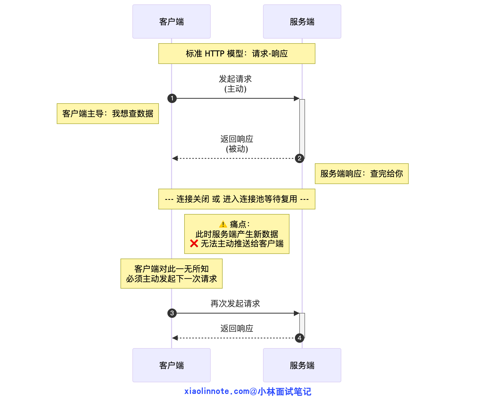
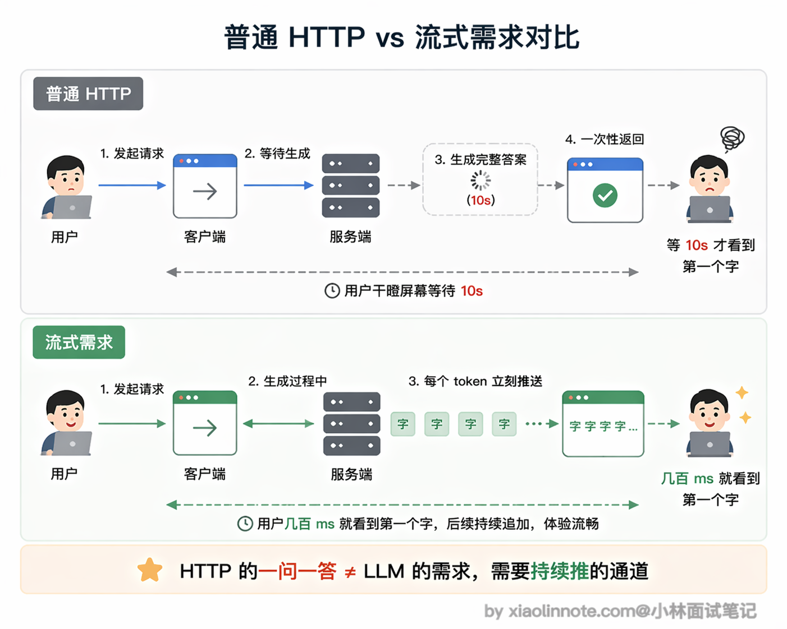
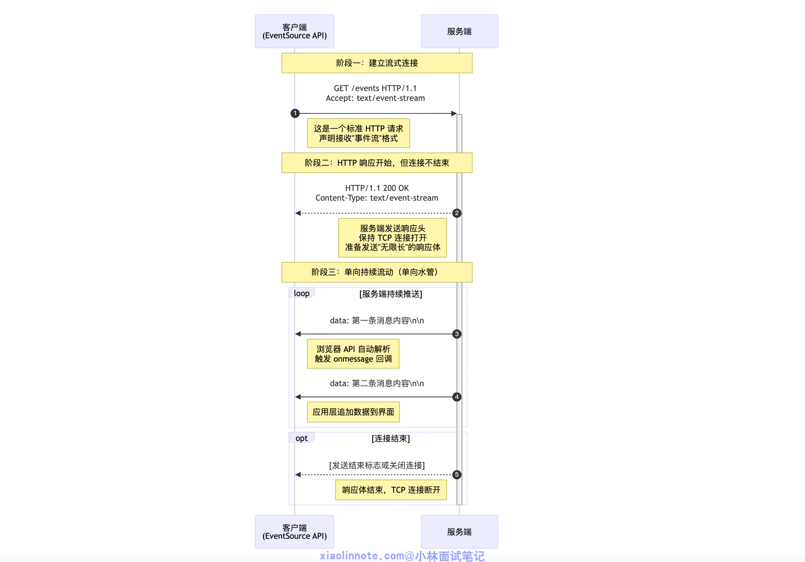
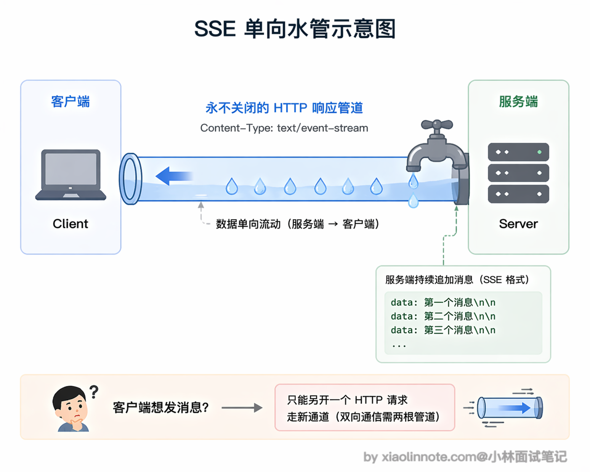
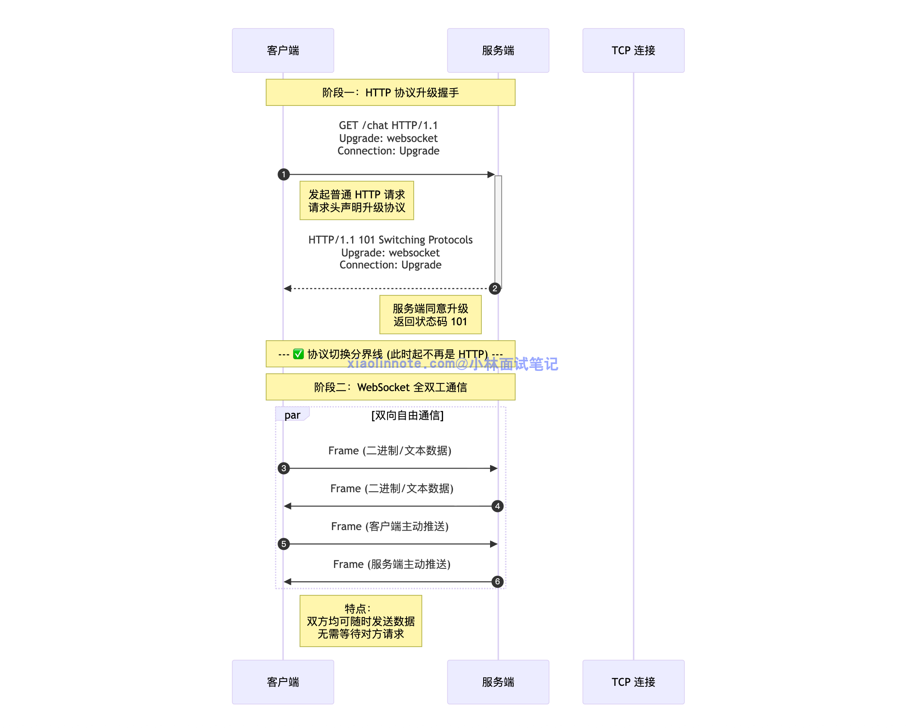
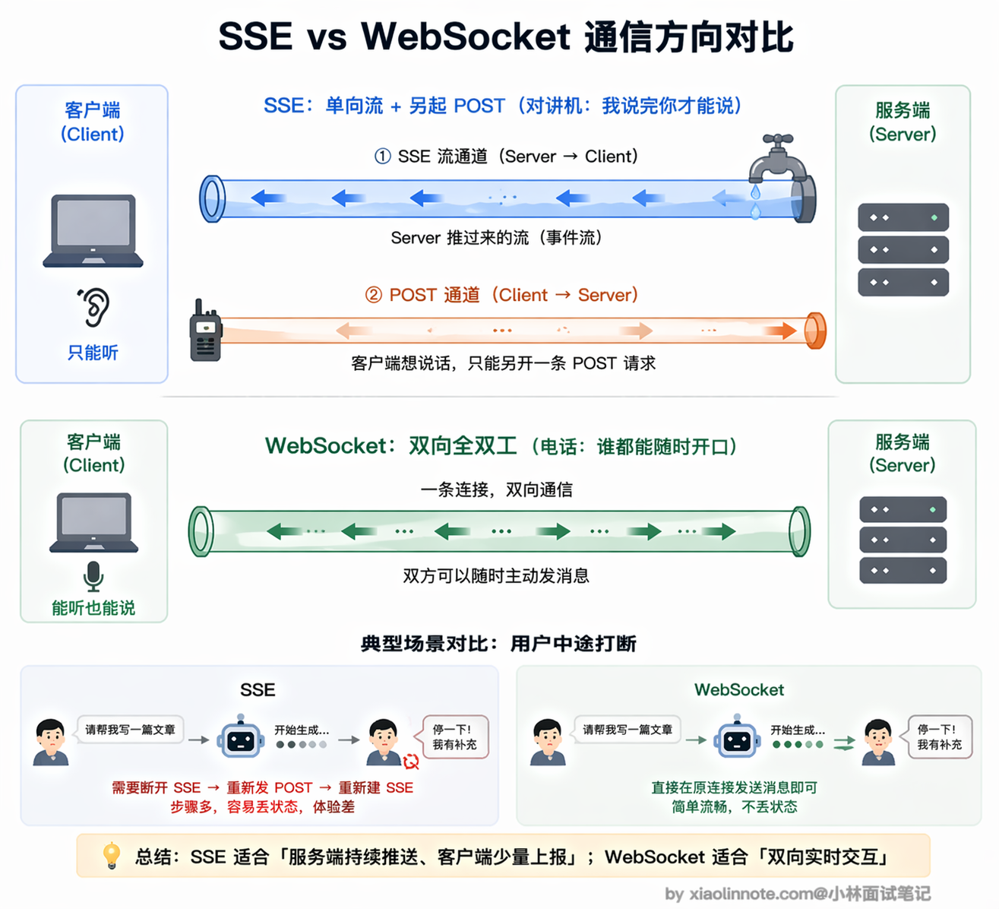
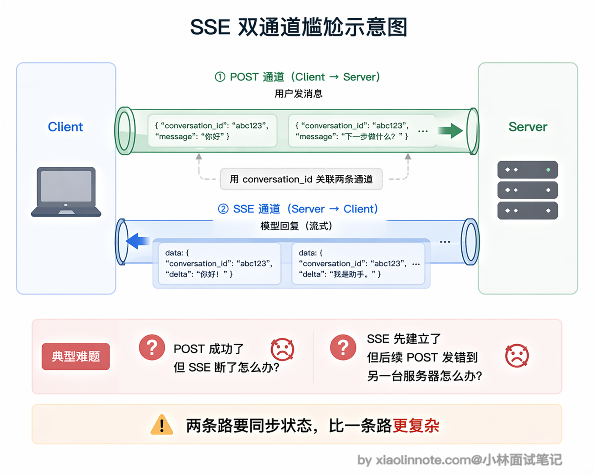
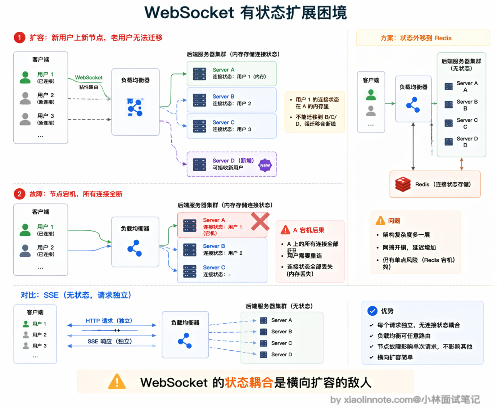
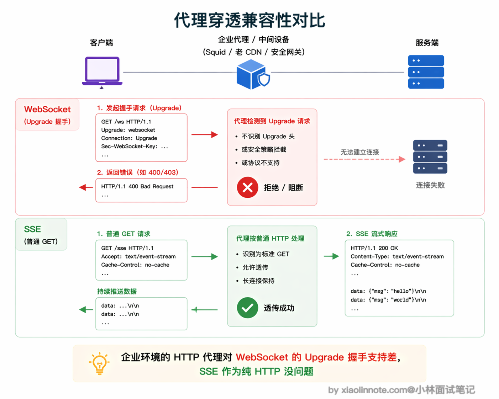
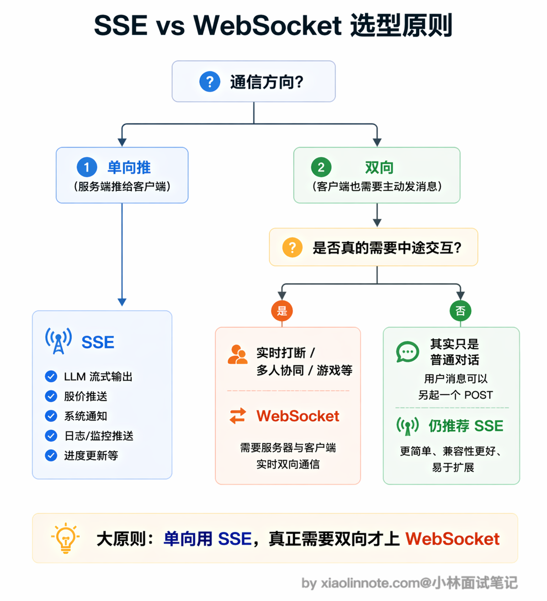

说说 WebSocket 和 SSE 通信的区别及局限性？
👔面试官：说说 WebSocket 和 SSE 通信的区别及局限性？
🙋♂️我：SSE 和 WebSocket 都是长连接，区别就是 SSE 比较简单，WebSocket 比较复杂。做 AI 对话的话，WebSocket 更好，因为它功能更强大，全双工嘛。
👔面试官：「功能更强大就更好」？那为什么 OpenAI、Anthropic 的流式 API 全都用 SSE 而不是 WebSocket？你得从实际场景出发去分析，不能只看功能强不强。
🙋♂️我：可能是因为 SSE 更简单吧？不过我觉得 SSE 就是 WebSocket 的简化版，功能上是 WebSocket 的子集，没什么本质区别。
👔面试官：这个理解不对。SSE（Server-Sent Events，服务器推送事件）是定义在 HTTP 响应之上的事件流格式，WebSocket 则是在 HTTP 握手后切换到独立的双向协议，两者不是简单的父子关系。SSE 受浏览器、HTTP 版本、代理缓冲和重连语义影响；WebSocket 则需要额外设计会话、扩展、鉴权和横向扩展。选型要看场景需求，不是简单的「谁是谁的子集」。
看来 SSE 和 WebSocket 的区别远不止「简单 vs 复杂」这么表面，下面我从底层原理到实际局限，把两者的核心差异和各自的坑都讲清楚。
💡 简要回答
我觉得最核心的区别是通信方向：SSE 是服务端单向推，客户端只能接收，想发消息只能另起一个 HTTP 请求；WebSocket 是全双工，双方都可以随时主动发消息。
对于 LLM 流式输出这种「模型持续推送增量、用户主要接收」的场景，基于 HTTP 的事件流通常够用，而且容易接入现有鉴权、代理和可观测链路；具体供应商的流式接口和事件格式仍需以其文档为准，不能把某两家产品的实现当成行业统一要求。
WebSocket 的复杂性只有在真正需要双向实时交互的时候才值得引入，比如用户要在模型说话过程中随时打断。
两者各有局限：SSE 在 HTTP/1.1 浏览器连接模型下可能受同源并发连接数限制，并且需要处理文本事件、代理缓冲、超时和重连；WebSocket 连接有状态、横向扩展和断线恢复需要额外设计，也可能被不支持 Upgrade 的中间设备影响。大多数以文本增量为主的对话可以先采用 HTTP 流式方案，再根据双向实时需求升级。
📝 详细解析
先从 HTTP 的本质说起
要真正理解 SSE 和 WebSocket 的区别，不能只看它们各自的功能列表，得先回到更底层的问题：它们到底在解决什么问题？答案是普通 HTTP 做不到的事情。
标准的 HTTP 请求是「一问一答」模型：客户端发请求，服务端返回响应，连接关闭（或者进连接池等待下次复用）。
服务端在任何时候都不能主动「推」数据给客户端，它只能被动等客户端来问。你可以把它想象成打电话：你说一句「你好」，对方回一句「你好」，然后挂电话，这条线就断了。这套机制在传统 Web 里够用，但 AI 对话场景不行。

模型生成一个完整回答需要几秒甚至十几秒，如果等全部生成完再一次性返回，用户只能干瞪着空白屏幕等待，体验极差。我们需要的效果是：模型生成一个词就推一个词，用户实时看到文字逐渐出现，就像 ChatGPT 那样一个字一个字「打」出来。这就需要连接保持打开、服务端能主动持续往外推数据，HTTP 的「问一答一然后断」做不到这件事。

SSE：用普通 HTTP「撑开」一条单向水管
SSE（Server-Sent Events，服务器推送事件）是定义在 HTTP 响应之上的事件流格式，不是 WebSocket 的简化版，也不只属于 HTTP/1.1。客户端发起一个普通 HTTP 请求并声明 Accept: text/event-stream，服务端保持响应打开，按 SSE 格式写入事件；HTTP/2 或 HTTP/3 是否可用、代理是否正确转发，则取决于浏览器和基础设施。
它的做法是：客户端发一个普通 HTTP GET 请求，但在请求头里声明 Accept: text/event-stream，告诉服务端「我想收流式数据」。服务端收到后，不关闭连接，而是保持连接持续打开，不停往里写数据。

这条连接在技术上仍然是一个 HTTP 响应，响应体可以持续一段时间并在服务端需要时结束。可以把它理解为「一根从服务端流向客户端的单向水管」，水（数据）只能从服务端流向客户端；客户端若要提交消息或取消任务，需要另发 HTTP 请求或关闭连接。

有必要讲一下 SSE 的消息格式是什么样的，因为这直接决定了它为什么这么好用。
SSE 的数据不是 JSON，而是一种非常简单的纯文本格式，每条消息以 data: 开头，后面跟数据内容，结尾是两个换行符。
浏览器的 EventSource API 可以消费符合 SSE 约定的 GET 事件流；但带自定义鉴权头、POST 请求体或更复杂的事件协议时，应用也常用 fetch/其他 HTTP 客户端自行解析流。实际产品看到的 data: {...} 只是常见应用负载，不是 SSE 强制的 JSON 结构。
浏览器专门有一个叫 EventSource 的内置 API 来处理这种格式，你只需要打开这个连接，注册一个 onmessage 回调函数，每收到一条消息就自动触发，完全不用自己解析底层数据流，用起来非常方便。
SSE 之所以成为 LLM 流式输出的行业标准，还有一个很关键但容易被忽视的原因：文字传输天然适合 TCP 的可靠有序传输。模型输出是一个个 token 组成的连续文本，如果中间某个 token 丢了，整段话的意思可能完全变了，顺序乱了更是无法阅读。
所以你希望每个 token 都准确到达、不乱序，这恰恰是 TCP 的强项。你愿意等网络重传，因为等来的是正确的内容。这和语音场景（WebRTC）完全相反，那里 TCP 的重传机制会造成不可接受的延迟，所以语音要换 UDP；但文字场景里 TCP 反而是你的朋友，你需要它。
WebSocket：从 HTTP 升级成真正的双向信道
理解了 SSE 是怎么回事，WebSocket 就很好对比了。WebSocket 是一个独立的协议，建立在 TCP 之上，但不是 HTTP 的特性。它的建立过程有一个特殊的「握手仪式」：客户端先发一个看起来像普通 HTTP 请求的东西，但请求头里带了一句话「我想升级成 WebSocket」。
服务端如果同意，回一个 101 Switching Protocols 的响应，从这一刻起，这条 TCP 连接就「变性」了，不再遵循 HTTP 的一问一答规则，变成了一条双方都可以随时说话的全双工信道。你可以把这个转变想象成：原来是对讲机（你说完按按钮让对方说），升级成了电话（双方都可以随时开口，谁都不用等谁）。

和 SSE 最本质的区别是通信方向。SSE 只有服务端能主动推，客户端想发消息必须另起一个 HTTP 请求，两个方向用了两套机制；WebSocket 是真正的双向，客户端和服务端都可以随时主动发消息，对方立刻就能收到，没有任何「谁先说话」的限制，一条连接搞定两个方向。
用「用户要在模型说话中途打断」这个场景来感受两者的差别：用 SSE 时，客户端可以关闭事件流，同时通过独立的取消 HTTP 请求或任务接口通知服务端；如果服务端只把断开当作网络事件而没有取消语义，模型任务可能仍会继续消耗资源。用 WebSocket 时，可以在同一条连接里发送「停止」指令，但服务端仍需定义消息格式、请求 ID、取消确认和超时，不能把“同一连接”当成自动可靠的取消机制。

SSE 的局限：不只是「单向」那么简单
说完了两者的核心区别，接下来要聊它们各自的局限性了，这往往是面试官追问的重点。先看 SSE。
SSE 的单向性带来的第一个设计问题，是应用层常见的「双通道」组合。
SSE 只能从服务端推向客户端，用户发消息通常走独立的 POST 请求或其他 HTTP 请求；同一个对话因此要靠 conversation ID、request ID 或任务 ID 关联起来。也可以只用一个长轮询/流式 POST，具体取决于客户端和服务端的 API 设计。
服务端收到 POST 请求后，找到对应的 SSE 长连接，把模型输出推过去。对于简单场景这套机制够用，但状态管理比 WebSocket 的单一通道复杂，出问题时排查链路也更长。

第二个容易被忽视的坑是 HTTP/1.1 下的浏览器同源并发连接模型。
许多浏览器对同一来源的 HTTP/1.1 并发连接有实现相关的上限，常见实现约为 6 条，但这不是 SSE 协议规定的固定数字。HTTP/2/HTTP/3 的多路复用通常能缓解这个问题，但浏览器、反向代理和网关的流数、空闲超时和缓冲配置仍可能造成排队或断流。
第三个是 SSE 只能传文本这条限制。
SSE 的事件体按文本处理；如果把二进制放进文本事件，通常要 Base64 编码，理论上会增加约三分之一的数据量，另外还要承担解码和分片开销。它不是传二进制媒体的合适抽象，但并不意味着任何二进制都“必须”这样传：可以另设 HTTP 下载、WebSocket 二进制帧或 WebRTC 媒体轨道。实时语音通常更适合 WebRTC，但仍要结合设备、网络和服务端能力选型。
还有一个实现细节是断线重连。浏览器客户端通常支持按 retry 和 Last-Event-ID 约定尝试重连，但“断了接着上次继续”不是自动保证的：服务端需要持久化事件 ID、定义重放窗口，并处理重复事件、过期任务和鉴权失效。否则重连可能丢失中间内容，也可能重复消费，应用必须具备幂等或去重逻辑。
WebSocket 的局限：有状态带来的扩展麻烦
WebSocket 最麻烦的问题是「有状态」。
每条 WebSocket 连接在建立时通常会落到某一台后端服务器，连接对象和部分会话状态保存在该实例；如果业务状态没有外置，后续处理就需要会话亲和或稳定路由。通过共享状态、消息代理或连接网关，可以降低对固定实例的依赖，但会增加一致性和运维复杂度。
当你想横向扩容、加新的机器时，新机器接不到老连接，老连接的用户无法迁移到新机器，扩容的效果大打折扣。
常见的解决办法是把连接状态外移到 Redis 等共享存储，通过发布订阅机制把消息中转到正确的服务器，但这让架构明显变复杂，多了一跳，延迟也增加了。
相比之下，SSE 仍然会占用一个长 HTTP 响应，不能把它简单当成普通短请求任意转发；负载均衡器需要正确处理长连接、超时、缓冲和重连，应用状态也要跨实例可恢复。它通常更容易接入 HTTP 基础设施，但不等于横向扩展自动简单。

第二个实际部署中频繁踩的坑是代理和防火墙穿透。
某些企业代理、老版本 CDN 或安全网关可能不支持或不允许 WebSocket 的 Upgrade 握手，导致连接建立失败；是否发生取决于具体网络路径和配置。
SSE 使用普通 HTTP 语义，通常更容易接入现有代理，但仍需关闭不当的响应缓冲、配置心跳与空闲超时，并确认代理不会截断 text/event-stream。
MCP 的远程传输也体现了这种分层取舍：当前 Streamable HTTP 在单个 MCP 端点上按请求返回 JSON 或事件流，具体会话、鉴权和重连策略仍由规范与实现共同决定（详见 13 题）。不能简单概括为“所有 MCP 都是 HTTP + SSE”。

第三个是 WebSocket 没有内置的请求-响应配对机制。HTTP 里每个请求有自己的响应，天然一一对应。WebSocket 里消息就是消息，服务端发来一条消息，你不知道它对应哪个请求，需要自己在消息里加请求 ID，在客户端维护请求 ID 到等待回调的映射表，才能实现「发出一条消息，等待特定响应」的语义。
说起来不难，但实现起来是不少的工作量，而且一旦断线重连，那些还在等待响应的请求该怎么处理，也需要专门设计重试逻辑。
在 AI 场景下怎么选？
大原则是「单向推就用 SSE，真正需要双向才上 WebSocket」。文字对话天然是单向推：模型在说话，你在看，你想回复直接发一个新的 POST 就行，SSE 完全够。只有当你需要客户端在任意时刻主动说话，比如实时打断、多人协同编辑、游戏类实时同步，才值得引入 WebSocket 的复杂度。
| 场景 | 推荐方案 | 原因 |
|---|---|---|
| LLM 流式文字输出（ChatGPT 风格） | SSE | 单向推送够用，轻量，HTTP 原生支持，运维简单 |
| 多轮对话（用户发消息 + 模型回复） | SSE + 普通 POST | 用户发消息走 POST，模型回复走 SSE，解耦简单 |
| 需要用户中途打断模型输出 | WebSocket | 需要客户端在流式输出中途主动发消息 |
| 多人协同（多用户同时编辑、实时同步） | WebSocket | 频繁双向消息，SSE + POST 的双通道架构太繁琐 |
| 实时语音对话 | WebRTC | 音频流需要 UDP + 低延迟，WebSocket 的 TCP 重传是瓶颈 |
| MCP 远程 Server | 按所用规范选择 Streamable HTTP 等传输 | 关注单端点请求/响应、事件流、认证、会话、断线恢复和代理超时，不要只背历史传输名称 |
对以文本增量为主的 LLM 对话，HTTP 流式响应通常已经足够；但供应商、浏览器客户端和取消语义可能不同，应以实际接口契约为准。只有当双向实时事件、低延迟控制或多方协同带来的收益超过连接管理成本时，才引入 WebSocket。

🎯 面试总结
回到开头踩的雷，最大的误区是觉得「WebSocket 功能更强大所以更好」，或者把 SSE 当成 WebSocket 的简化版。
面试回答这道题，第一个核心要点是通信方向的区别：SSE 是服务端单向推送，客户端想发消息要另起 HTTP 请求；WebSocket 是全双工，双方都可以随时主动发消息。这是两者最本质的差异，不是「简单 vs 复杂」的关系。
第二个要点是各自的局限性，这往往是面试官追问的重点。
SSE 的三个坑要记住：HTTP/1.1 浏览器同源连接数可能受实现上限影响、事件体按文本处理且二进制会带来编码开销、断线恢复需要服务端事件 ID/重放和应用层幂等；此外还要排查代理缓冲与空闲超时。
WebSocket 的三个坑也要说到：连接状态让横向扩展需要会话亲和或共享消息层、Upgrade 可能被特定代理或防火墙拦截、协议本身不提供应用层请求-响应/重试语义（需要自己维护请求 ID、超时、取消和断线恢复）。
第三个要点是选型原则：先看通信方向、可靠性和取消语义，再看基础设施约束；单向增量推送可优先考虑 HTTP 事件流，真正需要双向实时控制时再考虑 WebSocket。能说出判断依据，并说明断线、重连、鉴权和代理配置，比单纯罗列功能差异更有说服力。